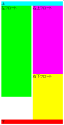

上記のいずれかの条件を満たす要素の後方に高さが大きいフロートを置くと、フロートが本来置かれるべき位置より下にずれてしまうことがある。
<style type="text/css">
.top {
width: 100%;
background: #00ffff;
}
.float1 {
float: right;
width: 49%;
height: 300px;
background: #ff00ff;
}
.float2 {
float: left;
width: 49%;
height: 400px;
background: #00ff00;
}
.float3 {
float: right;
width: 49%;
height: 200px;
background: #ffff00;
}
.bottom {
clear: both;
background: #ff0000;
}
</style>
<div class="top">上</div>
<div class="float1">右上フロート</div>
<div class="float2">左フロート</div>
<div class="float3">右下フロート</div>
<div class="bottom">下</div>
最上段に幅を指定したdiv要素、その下に左フロート1つと右フロート2つを段組み状に並べ、最下段に回り込みを抑制したdiv要素を置いています。上記のソースの表示結果を検証ページで見ることができます。
N7.02での表示
WinIE5.01での表示
バグの原因になっている要素（上記の例示では <div class="top"></div>）widthプロパティやheightプロパティを指定しないことで不具合を回避することができますが、以下の書き込みにあるように回避できない場合もあるようです。
>>930-934のバグには発展形も。
b097には「幅や高さを指定した要素の下に」とあるが、「要素の中」でもなるらしい。
http://pc2.2ch.net/test/read.cgi/hp/1050086156/23-39
また幅や高さを指定しなくてもなる場合もあるとのこと。
#uewaku { background-color: #333000; color: #b7a800; }
#migiue { float:right; width:50%; text-align: right;}
#hidariue {height: 41px;}
<div id="uewaku">
<div id="migiue">
<div class="annai"><a href="..</div>
<div id="hidariue">
<a href="index.html" class="kirikae"><img src=".画像.gif" alt="画像" width="100" height="40" class="画像" /></a>
</div>
</div>
>#uewakuにwidthもheightもないのに、もう訳がわかりません。
>もちろんIE5意外ではきちんと表示されます。
「要素の中でもなるらしい」という発生条件もあるようですが再現できていません（上記の書き込みにある例はdiv要素の終了タグが1つ欠落している）。
WinIE5.5以降でこの不具合の発生は確認されませんでした。